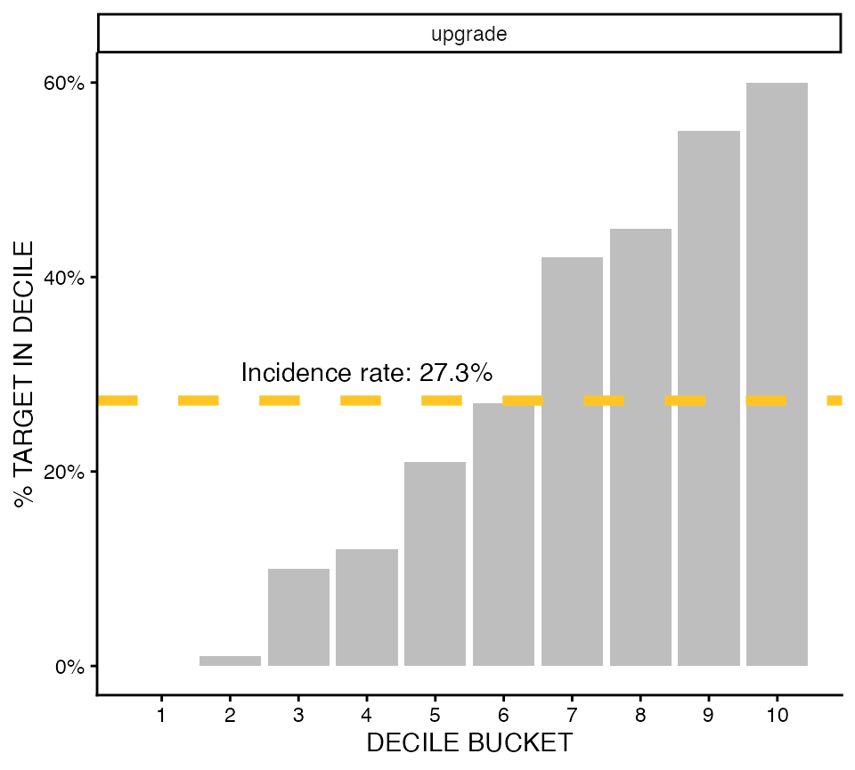
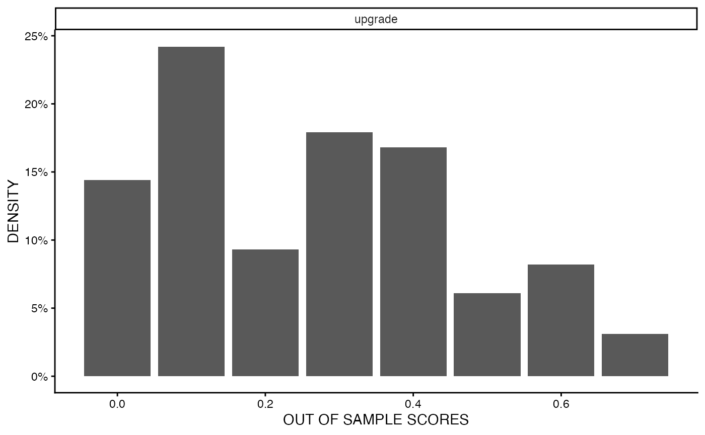

vignettes/civis_ml.Rmd
civis_ml.RmdThere are so many models to build! When this becomes challenging on a local machine, offloading model building to the cloud can save a lot of time and effort.
CivisML is a machine learning service on Civis Platform that makes this as painless as possible. You can fit many different models, do extensive hyperparameter tuning, and score data sets with millions of observations stored in remote databases. Once these models are built, they live in Civis Platform permanently and can be included into production pipelines. Results can be easily incorporated into reports and dashboards.
CivisML is built in Python using scikit-learn, and leverages
AWS behind the scenes for efficient distributed computing. However, most
of its features can be used through R without knowledge of Python or AWS
with the civis_ml function in civis.
While civis_ml is a complex function with many
arguments, basic machine learning modeling and scoring can be easily
carried out. We illustrate several features of civis_ml
with data from a fictitious company called Brandable, who is looking to
predict which customers are likely to upgrade from the free to the
premium service.
The first step of modeling with civis_ml is to specify
the data source, which is the first argument. civis_ml
works with local data frames, a CSV on local disk, feather-format files, tables
in Redshift, and files on S3 (the files endpoint):
library(civis)
civis_ml(df, ...)
civis_ml("path/to/data.csv", ...)
civis_ml(civis_table(table_name = "schema.table", database_name = "database"), ...)
civis_ml(civis_file(1234), ...)The Brandable data is located in a Redshift table called
sample_project.premium_training_set.
options(civis.default_db = "my_database")
tab <- civis_table(table_name = "sample_project.premium_training_set")Note that civis_table only returns information on where
to find the data for civis_ml, not the data itself.
civis_table also takes two SQL statements that can be
useful for limiting the rows used for training: sql_where,
and sql_limit.
After the data source is specified, we next choose the model type.
There are 13 named CivisML models that can be called from
civis_ml, 6 for classification and 7 for regression. The
name of the model corresponds to the name of the estimator in
scikit-learn. It can be given in the model_type argument of
civis_ml, or called directly using a
civis_ml_* function such as
civis_ml_sparse_logistic.
| Name | R Workflow | Model Type | scikit-learn Documentation | |
|---|---|---|---|---|
sparse_logistic |
civis_ml_sparse_logistic |
classification | Logistic Regression | |
gradient_boosting_classifier |
civis_ml_gradient_boosting_classifier |
classification | GradientBoostingClassifier | |
random_forest_classifier |
civis_ml_random_forest_classifier |
classification | RandomForestClassifier | |
extra_trees_classifier |
civis_ml_extra_trees_classifier |
classification | ExtraTreesClassifier | |
multilayer_perceptron_classifier |
classification | muffnn.MLPClassifier | ||
stacking_classifier |
classification | StackedClassifier | ||
sparse_linear_regressor |
civis_ml_sparse_linear_regressor |
regression | LinearRegression | |
sparse_ridge_regressor |
civis_ml_sparse_ridge_regressor |
regression | Ridge | |
gradient_boosting_regressor |
civis_ml_gradient_boosting_regressor |
regression | GradientBoostingRegressor | |
random_forest_regressor |
civis_ml_random_forest_regressor |
regression | RandomForestRegressor | |
extra_trees_regressor |
civis_ml_extra_trees_regressor |
regression | ExtraTreesRegressor | |
multilayer_perceptron_regressor |
regression | muffnn.MLPRegressor | ||
stacking_regressor |
regression | StackedRegressor |
Documentation on the meta parameters specific to each estimator are
provided in ?civis_ml_*. For example, the regularization
strength parameter C of sparse_logistic is
documented in ?civis_ml_sparse_logistic.
For the Brandable data, we use a random_forest
classifier to predict the probability that a customer upgrades from free
to premium services. For efficiency, we can also denote a
primary_key, and a set of excluded_columns
that are not included in the model:
library(civis)
tab <- civis_table("sample_project.premium_training_set")
m <- civis_ml(tab, dependent_variable = "upgrade",
model_type = "random_forest_classifier",
primary_key = "brandable_user_id",
excluded_columns = "residential_zip")
m <- civis_ml_random_forest_classifier(tab,
primary_key = "brandable_user_id",
excluded_columns = "residential_zip")Note that if the dependent variables have null values, those rows will be removed before modeling.
You can tune hyperparameters using one of two methods: grid search or
hyperband. CivisML will perform grid search if you pass a named list of
hyperparameters and candidate values to
cross_validation_parameters. By default, hyperparameter
tuning will run in parallel, using as many jobs as possible without
overloading your computing cluster. If you wish to have more control
over the number of jobs running at once, you can set it using the
n_jobs parameter.
Hyperband is an
efficient approach to hyperparameter optimization, and recommended over
grid search where possible. CivisML will perform hyperband optimization
if you pass the string "hyperband" to
cross_validation_parameters. Hyperband cannot be used to
tune GLMs. For this reason, preset GLMs do not have a hyperband option.
Hyperband is supported for random forests, gradient boosted trees, extra
trees, multilayer perceptrons, and the random forest and gradient
boosted tree steps of stacking. It is highly recommended that multilayer
perceptron models only be used with hyperband.
For the random_forest_classifier in the Brandable data,
we try both "hyperband" and grid search for hyperparameter
optimization.
tab <- civis_table("sample_project.premium_training_set")
# hyperband
m_hyper <- civis_ml(tab, dependent_variable = "upgrade",
model_type = "random_forest_classifier",
primary_key = "brandable_user_id",
excluded_columns = "residential_zip",
cross_validation_parameters = 'hyperband')
# grid search
cv_params <- list("max_depth" = c(2, 3, 5),
"n_estimators" = c(50, 100, 500))
m_grid <- civis_ml(tab, dependent_variable = "upgrade",
model_type = "random_forest_classifier",
primary_key = "brandable_user_id",
excluded_columns = "residential_zip",
cross_validation_parameters = cv_params)CivisML runs pre-defined models with hyperband using the following distributions:
| Models | Cost Parameter | Hyperband Distributions |
|---|---|---|
| gradient_boosting_classifier gradient_boosting_regressor GBT step in stacking_classifier GBT step in stacking_regressor |
n_estimators min = 100, max = 1000
|
max_depth: randint(low=1, high=5) max_features: [None, 'sqrt', 'log2', 0.5, 0.3, 0.1, 0.05, 0.01]
learning_rate: truncexpon(b=5, loc=.0003, scale=1./167.)
|
| ———————————- | —————— | ————————————————————————— |
| random_forest_classifier random_forest_regressor extra_trees_classifier extra_trees_regressor RF step in stacking_classifier RF step in stacking_regressor |
n_estimators min = 100, max = 1000
|
criterion: ['gini', 'entropy'] max_features: truncexpon(b=10., loc=.01, scale=1./10.11)
max_depth: [1, 2, 3, 4, 6, 10, None]
|
| ———————————- | —————— | ————————————————————————— |
| multilayer_perceptron_classifier multilayer_perceptron_regressor |
n_epochs min = 5, max = 50
|
keep_prob: uniform() ` hidden_units: [(), (16,), (32,), (64,), (64, 64), (64, 64, 64),
(128,), (128, 128), (128, 128, 128), (256,), (256, 256), (256, 256, 256), (512, 256, 128, 64), (1024, 512, 256, 128)] learning_rate: [1e-2, 2e-2, 5e-2, 8e-2, 1e-3, 2e-3, 5e-3, 8e-3, 1e-4]
|
The truncated exponential distribution for the gradient boosting classifier and regressor was chosen to skew the distribution toward small values, ranging between .0003 and .03, with a mean close to .006. Similarly, the truncated exponential distribution for the random forest and extra trees models skews toward small values, ranging between .01 and 1, and with a mean close to .1.
The "stacking_classifier" model stacks together the
"gradient_boosting_classifier" and
"random_forest_classifier" predefined models together with
a
glmnet.LogitNet(alpha=0, n_splits=4, max_iter=10000, tol=1e-5, scoring='log_loss').
Defaults for the predefined models are documented in
?civis_ml. Each column is first standardized,
and then the model predictions are combined using LogisticRegressionCV
with penalty='l2' and tol=1e-08. The
"stacking_regressor" works similarly, stacking together the
"gradient_boosting_regressor" and
"random_forest_regressor" models and a
glmnet.ElasticNet(alpha=0, n_splits=4, max_iter=10000, tol=1e-5, scoring='r2'),
combining them using NonNegativeLinearRegression.
m_stack <- civis_ml(tab, dependent_variable = "upgrade",
model_type = "stacking_classifier",
primary_key = "brandable_user_id",
excluded_columns = "residential_zip")A simple summary of the results from the best fitting model is
provided with print:
m## <CivisML random_forest_classifier>
## https://platform.civisanalytics.com/#/models/7072485
## Job id: 7072485 Run id: 58251183
##
## AUC: 0.8009
## upgrade:
## 0 1
## Prop Correct 0.923 0.3297Following the link takes you to a summary of the model results in
Civis Platform. Additional metrics can be computed with
get_metric:
get_metric(m, "accuracy")## [1] 0.761
get_metric(m, "confusion_matrix")## [,1] [,2]
## [1,] 671 56
## [2,] 183 90
get_metric(m, "roc_auc")## [1] 0.8009004Out of sample (or out of fold) scores used in training can be
retrieved using fetch_oos_scores:
oos <- fetch_oos_scores(m)
head(oos)## brandable_user_id upgrade_1
## 1 00214b9181f2347 0.3280
## 2 0b6cbd77cb8d98b 0.7140
## 3 12ca082b063a3bf 0.4480
## 4 130060adea791e8 0.2060
## 5 1495366621d3834 0.3152
## 6 1a8ed19916ae7c2 0.1600For classification problems, plot produces a a decile
plot using ggplot2. For the premium upgrade model, the
decile plot shows that the top-scoring 10% of individuals contain 2.20
times as many targets (people who upgraded) as a randomly selected list
of the same size.
plot(m)## Warning: `aes_string()` was deprecated in ggplot2 3.0.0.
## ℹ Please use tidy evaluation idioms with `aes()`.
## ℹ See also `vignette("ggplot2-in-packages")` for more information.
## ℹ The deprecated feature was likely used in the civis package.
## Please report the issue at
## <https://github.com/civisanalytics/civis-r/issues>.
## This warning is displayed once per session.
## Call `lifecycle::last_lifecycle_warnings()` to see where this warning was
## generated.## Warning: Using `size` aesthetic for lines was deprecated in ggplot2 3.4.0.
## ℹ Please use `linewidth` instead.
## ℹ The deprecated feature was likely used in the civis package.
## Please report the issue at
## <https://github.com/civisanalytics/civis-r/issues>.
## This warning is displayed once per session.
## Call `lifecycle::last_lifecycle_warnings()` to see where this warning was
## generated.
For regression problems, plot produces a binned
scatter-plot of
against
.
hist shows the histogram of out of sample (out of fold
scores), also using ggplot2:
hist(m)
CivisML can also be used to score models on hundreds of millions of
rows, and distributed over many compute instances. Like many estimators
in R, this is done through a predict method. The
newdata argument of predict can take any data
source supported in civis_ml. Here we use a table in
Redshift containing all Brandable users, and output the result to
another table in Redshift:
pred_tab <- civis_table(table_name = "sample_project.brandable_all_users")
pred_job <- predict(m, newdata = pred_tab,
output_table = "sample_project.brandable_user_scores")Like training and validation, scoring is distributed by default,
using up to 90 percent of your computing cluster resources. If you would
like to have more control over the number of jobs that are run at once,
you can set a maximum using n_jobs:
pred_job <- predict(m, newdata = pred_tab,
output_table = "sample_project.brandable_user_scores",
n_jobs = 25)The predictions can be loaded into memory using
fetch_predictions, which downloads directly from S3:
yhat <- fetch_predictions(pred_job)Note that if the table of predictions exceeds available memory, it
may be helpful to use download_civis instead.
# download from S3
download_civis(pred_job$model_info$output_file_ids, path = "my_predictions.csv")
# download from Redshift
download_civis("sample_project.brandable_user_scores")An existing model (or particular run of an existing model) can be
retrieved using civis_ml_fetch_existing:
model_id <- m$job$id
m <- civis_ml_fetch_existing(model_id)Unfortunately, many kinds of errors can occur. When an error occurs
within CivisML, a civis_ml_error is thrown. By default, the
log from the CivisML job is printed, which is useful for debugging.
Here is an example error from misspelling the model type:
civis_ml(tab, dependent_variable = "upgrade",
model_type = "random_fest_classifier",
primary_key = "brandable_user_id",
excluded_columns = "residential_zip",
cross_validation_parameters = cv_params)## <civis_ml_error>
## scripts_get_custom_runs(id = 7077157, run_id = 58263925):
## 2017-08-29 13:01:54 PM CDT Queued
## 2017-08-29 13:01:55 PM CDT Running
## 2017-08-29 13:01:57 PM CDT Dedicating resources
## 2017-08-29 13:01:58 PM CDT Downloading code and container
## 2017-08-29 13:01:59 PM CDT Executing script
## 2017-08-29 13:02:03 PM CDT Please select one of the pre-defined models: ['sparse_logistic', 'sparse_linear_regressor', 'sparse_ridge_regressor', 'gradient_boosting_classifier', 'random_forest_classifier', 'extra_trees_classifier', 'gradient_boosting_regressor', 'random_forest_regressor', 'extra_trees_regressor']
## 2017-08-29 13:02:05 PM CDT Process used approximately 97.57 MiB of its 3188 MiB memory limit
## 2017-08-29 13:02:05 PM CDT Failed
## 2017-08-29 13:02:06 PM CDT Error on job: Process ended with an error, exiting: 1.If you don’t understand the error message, providing the error message, job, and run ids to support is the best way to get help!
civis_ml
When programming with civis_ml, errors can be caught
using the base R try or tryCatch. In
civis, we provide functions for getting debugging
information using get_error or just the logs using
fetch_logs.
e <- tryCatch({
civis_ml(tab, dependent_variable = "upgrade",
model_type = "random_fest_classifier",
primary_key = "brandable_user_id",
excluded_columns = "residential_zip")
}, civis_ml_error = function(e) e)
get_error(e)
fetch_logs(e)Error handling can be used to implement more robust workflow
programming with civis_ml. In the following function, we
implement retry_model, which retries on e.g. connection
failures but not on a civis_ml_error.
retry_model <- function(max_retries = 5) {
i <- 1
while (i < max_retries) {
tryCatch({
m <- civis_ml(tab, dependent_variable = "upgrade",
model_type = "random_forest_classifier",
primary_key = "brandable_user_id",
excluded_columns = "residential_zip")
return(m)
}, civis_ml_error = function(e) stop(e))
cat("Retry: ", i, fill = TRUE)
i <- i + 1
}
stop("Exceeded maximum retries.")
}Workflow programming could be further enhanced by printing the logs, storing the error object, or writing error logs to a file or database.
To fit many models in parallel using parallel,
foreach, or future, check out this
article or the vignette on concurrency at
browseVignettes("civis").
Many estimators take a sample_weight argument. This can
be be specified with the fit_params argument of
civis_ml using
list(sample_weight = 'survey_weight_column').
Modeling data must be complete. Any missing values will be imputed with the mean of non-null values in a column.
By default, CivisML uses its latest version in production. If you
would like a specific version (e.g., for a production pipeline where
pinning the CivisML version is desirable), both civis_ml
and the civis_ml_* functions have the optional parameter
civisml_version that accepts a string, e.g.,
'v2.3' for CivisML v2.3. Please see here
for the list of CivisML versions.
Custom estimators can be written in Python and included in CivisML if
they follow the scikit-learn API. For example, the
sparse_logistic, sparse_linear_regressor, and
sparse_ridge_regressor models all use the public Civis
Analytics glmnet
wrapper in Python.
Browse the CivisML documentation for more details!